---skills---
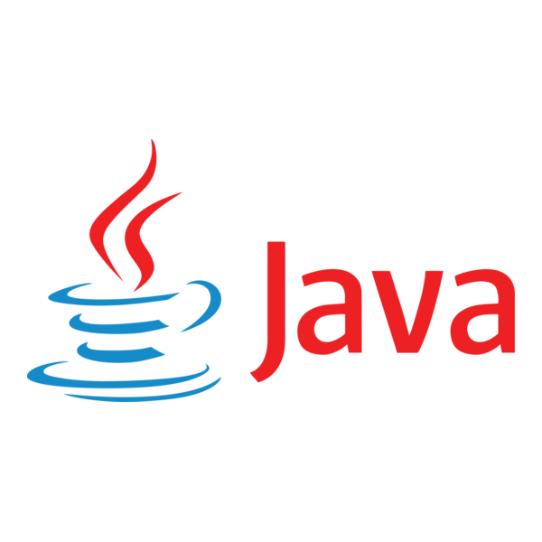 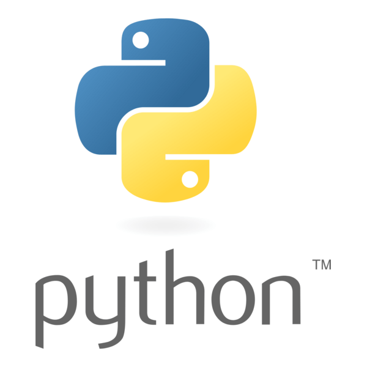 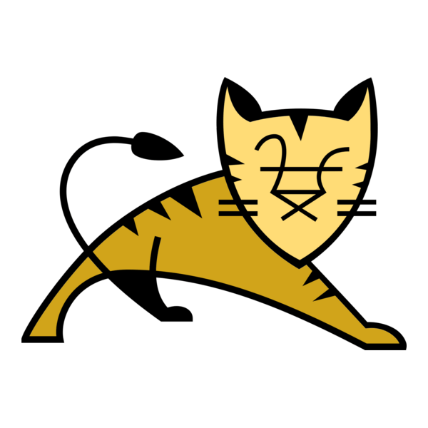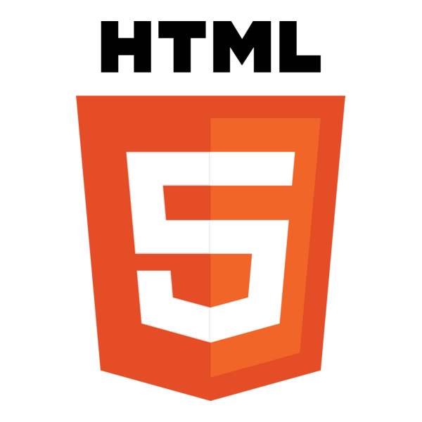 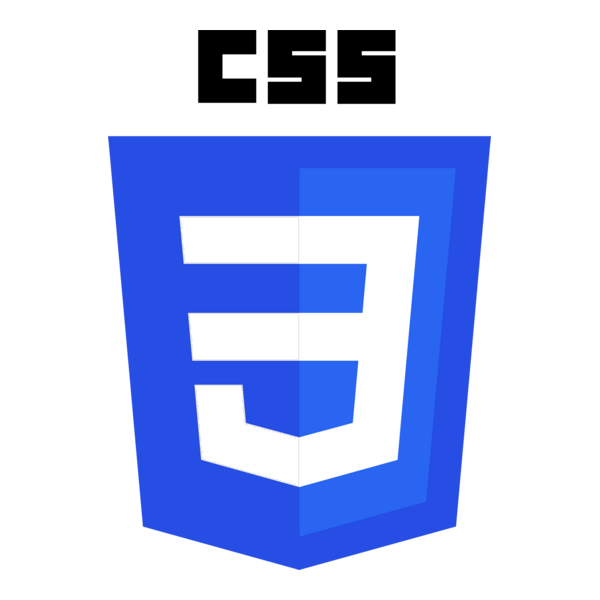 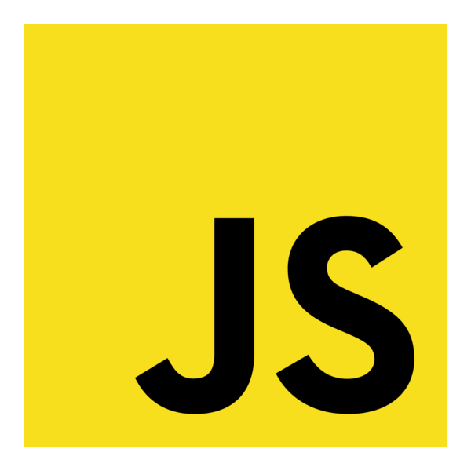
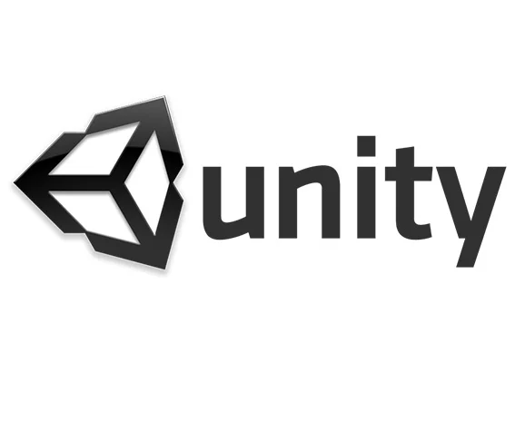 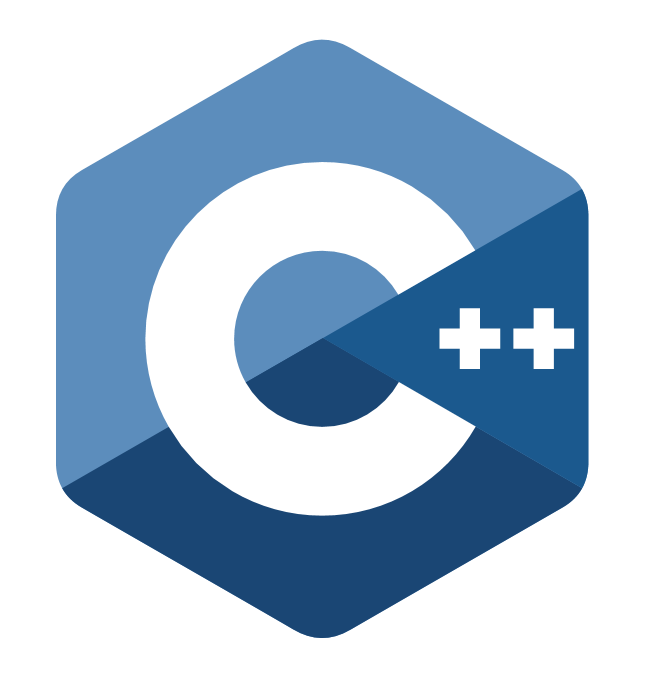 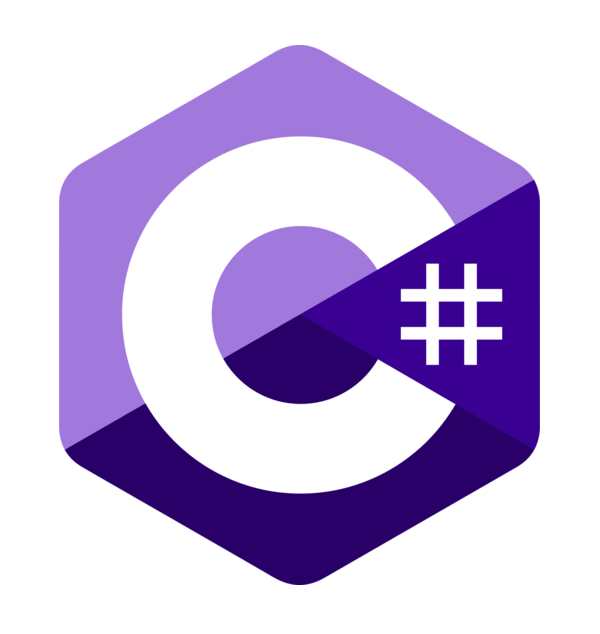
---qualification---
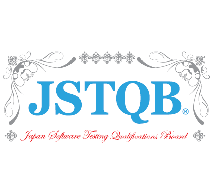 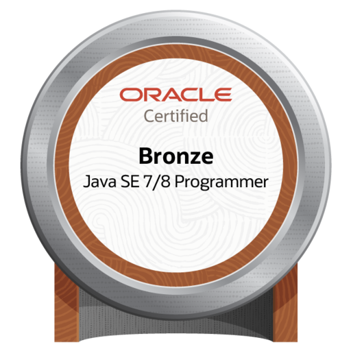 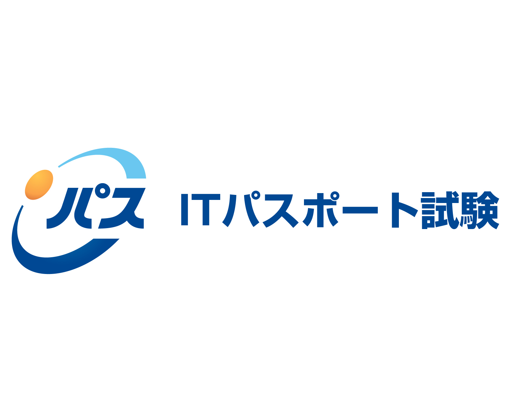---InternShip---
▼スマートフォンゲームの第三者検証
2023年 3月 ~ 2023年 7月
▼銀行受付タブレット端末テスト検証
2023年 8月 ~ 2023年 3月
▼BtoB向け検証(携帯キャリア)
2023年 4月 ~ 2023年10月
▼カメラの連携モバイルアプリの検証
2023年11月 ~ 2024年 3月
▼車載端末のシステムテスト検証
2024年 5月 ~ 2024年 7月
■自己PR
これまで約3年間、QAエンジニアとして品質保証や管理業務に携わってきました。 金融系のWEBサイトやBtoB向けのECサイト、自動車の搭載端末など、 いろんな製品に第三者検証を担当し関わってきました。テスト設計から実施、ログ解析、影響度の分析、 報告フォーマットの整備まで、幅広く対応してきた経験があります。
アジャイル開発の現場では、機能追加による影響範囲を考慮したテストケースの設計や、 仕様の抜け漏れを防ぐためのQA視点でのフィードバックなど、開発チームとの連携を意識して動いていました。
また、ExcelやVBAを使って業務効率化ツールを作ったり、 仕様書の更新・整備を進めたりと、自分から改善提案をすることも大切にしてきました。 ただ、検証業務の中で不具合を起票する際に、根本的な原因や仕組みを深く理解できていないことにもどかしさを感じることがありました。
もともとコーディングには興味があったので、もっと技術的な理解を深めたいと思い、職業訓練校に通うことを決意。今ではJava Bronzeを取得するまでになりました。まだまだ学びの途中ですが、実際のプロジェクトに参加して実務経験を積みながら、自分の市場価値を高めていきたいと思っています。これまでの品質保証の経験と、これから伸ばしていく技術力を掛け合わせて、 貢献できるエンジニアを目指しています。